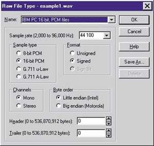
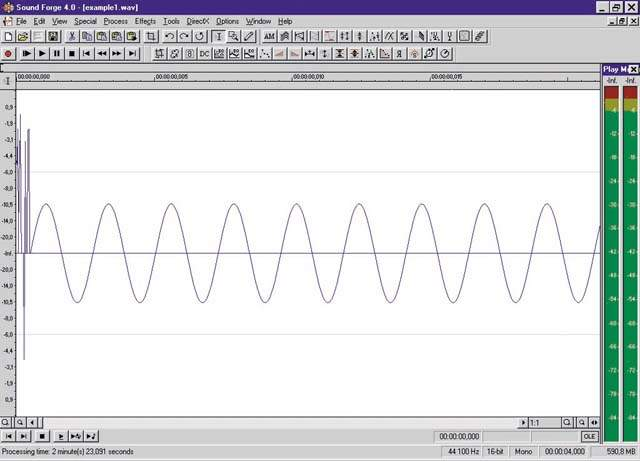
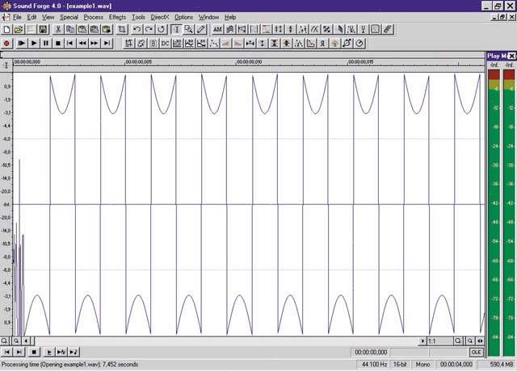
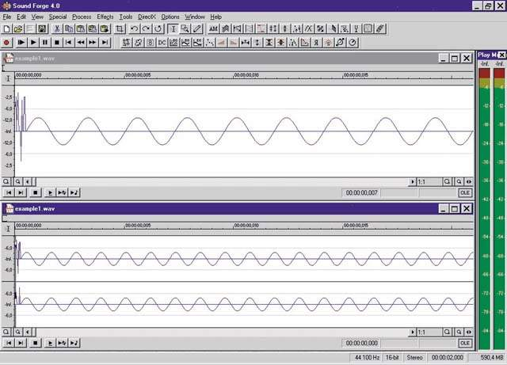
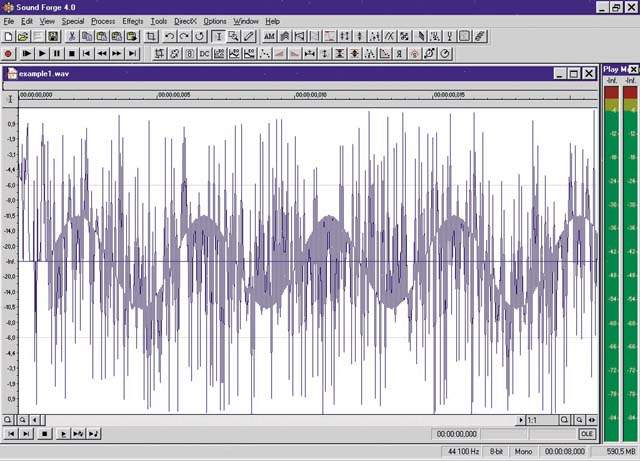
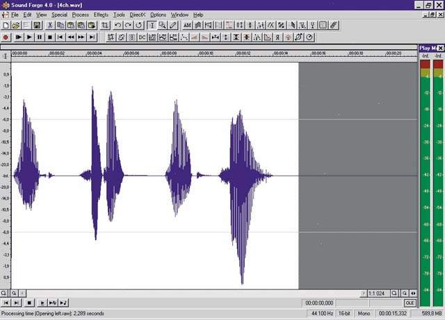
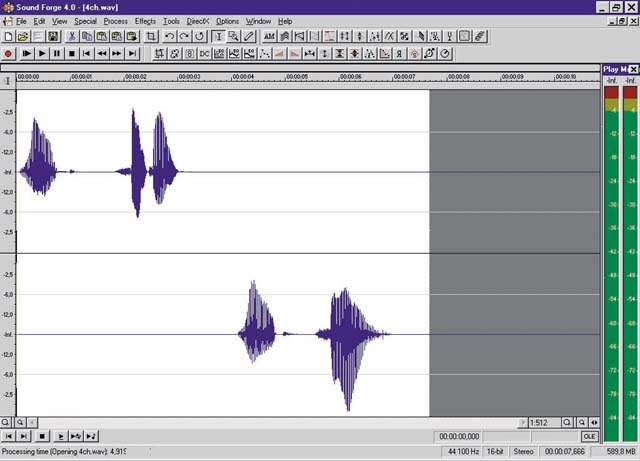
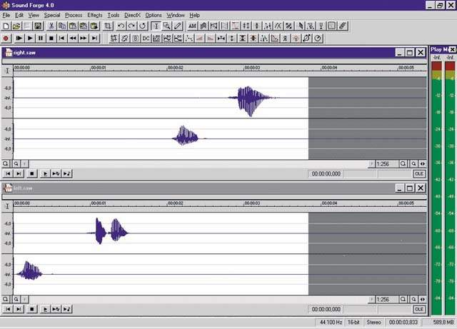

Форматы звуковых файлов. Часть 2
Сергей Батов
Продолжая обсуждение WAVE-файлов, остановимся попутно на другом
формате, именуемом RAW. Raw по-английски означает "сырой", "необработанный".
Вообще этот формат применяется для разных типов данных, не только
для звуковых. Аудиофайл формата RAW является просто-напросто последовательностью
отсчетов, представленных в том или ином виде. В предыдущей части
говорилось о сегменте (chunk) WAVE-файла, который начинается с идентификатора
'data' и содержит собственно аудиоданные. Если взять этот сегмент
и отбросить первые 8 байтов, содержащих идентификатор 'data' и длину
сегмента, то как раз и получится RAW-файл.
Более тесное знакомство с форматом RAW позволит разъяснить некоторые
детали, да и вообще лучше прочувствовать, как аудиоданные "живут"
на жестком диске компьютера.
Возьмем тот же example1.wav (16 разрядов, 44100 Гц, моно) с записью
четырех секунд синусоидального сигнала с частотой 440 Гц (ля первой
октавы). Откроем этот файл с помощью программы Sound Forge, но не
будем торопиться нажимать кнопку Open, найдя его в соответствующем
окне, а вместо этого щелкнем по треугольничку слева от строки Files
of type: (файлы типа:). Появится меню, внизу которого обнаруживается
строчка: Raw File (*.raw; *.*). Символы в скобках говорят о том,
что программа готова открыть файл с расширением .raw (звуковые RAW-файлы
могут также иметь расширение .pcm), или вообще с каким угодно расширением
(*.*)!
В этом все и дело - ведь RAW-файлом можно считать любой файл; другое
дело, как мы будем интерпретировать его содержимое. Этим и приходится
заниматься всякий раз, открывая какой-либо файл в данном формате,
ибо программа теперь уже не может руководствоваться заголовком файла:
его (заголовка) попросту нет.

Рис.
1
Нам предстоит уточнить кое-какие детали (рис.1). Программа желает
знать число каналов (Channels), сколькими разрядами представляется
отсчет (Sample type) и какова частота дискретизации (Sample rate).
Здесь все ясно: 1, 16, 44100. В первой части статьи (см. седьмой
номер) говорилось, что для WAVE-файлов принят способ представления
данных, при котором байты, составляющие шестнадцатиричное число,
надо просматривать справа налево, и что такой порядок байтов называется
"little endian". Это и надлежит выбрать в графе Byte order.
Теперь разберемся с пунктом Format. Как мы уже знаем, шестнадцатиразрядное
представление чисел дает возможность оперировать значениями от 0
до 65535. Это будет соответствовать беззнаковому формату (unsigned).
Формат signed позволяет использовать отрицательные числа, но диапазон
значений при этом будет от -32768 до 32767. Какой из двух форматов
применить для кодирования отсчетов звукового файла - совершенно
непринципиально, это дело всего лишь некоторой договоренности. Чтобы
перейти, скажем, от unsigned к signed, достаточно 0 принять за -32768
и пересчитать все значения с помощью простого вычитания.
Для файлов RIFF WAVE при способе кодирования звука PCM подразумевается,
что шестнадцатиразрядные числа имеют формат signed, а восьмиразрядные
- unsigned (с диапазоном значений от 0 до 255). Кстати, в табличке,
описывающей заголовок стандартного WAVE-файла (см. предыдущий номер),
никаких полей, параметров или признаков, уточняющих числовые форматы,
не наблюдается, так что волей-неволей приходится вышеупомянутые
договоренности соблюдать.
Для восьмиразрядных чисел в пункте Format "анкеты", которую предлагает
заполнить Sound Forge, появляется дополнительная опция Sign bit.
Она относится к еще одному способу представления чисел со знаком.
Дело в том, что отрицательные числа в компьютере представлены, как
правило, в виде "дополнения до двух" (two's complement). Это означает,
что в двоичном представлении числа N все нули заменяются единицами,
а единицы - нулями, после чего к числу прибавляют единицу. Если
это "дополнение до двух" числа N сложить с каким-либо другим числом
M, то результатом будет разность M и N. Такой прием позволяет операцию
вычитания свести к простому сложению. Так вот, особенность Sign
bit в том, что замены единиц на нули (и наоборот) не происходит,
а просто меняется старший разряд числа, который считают знаковым.
Еще раз подчеркну, что в случае восьмиразрядных PCM-данных WAVE-файла
указывается только unsigned. (Заодно обратите внимание, что "заумный"
пункт Byte order для восьмиразрядных чисел не нужен: байт всего
один).

Рис. 2
Итак, все готово и мы открываем файл (рис. 2). Все верно, при увеличении
(zoom) видна наша синусоида, только спереди тут еще какая-то загогулина.
Так отображаются 44 байта заголовка нашего WAVE-файла. Избежать
"лишнего шума" (в буквальном смысле), можно, поставив при открытии
файла число 44 в строке Header (рис 1.). Аналогично избавляются
и от ненужного "хвоста" (строка Trailer), если таковой имеется,
и известен его размер. Действуя подобным образом, можно открывать
в формате RAW звуковые файлы PCM-форматов (а также u-Law и A-Law)
в случае, если по расширению имени файла, а оно может быть изменено
как угодно и кем угодно, невозможно определить его исходный формат.
Конечно, при этом надо будет указывать ряд параметров, основываясь
на собственных предположениях. Зная заранее, к чему приводят ошибки
в этих параметрах, легче будет отыскать истину. Поэтому проведем
еще несколько экспериментов.

Рис. 3
Предположим, мы изначально не знали, что наш файл именно формата
WAV. Если, открывая его как RAW, мы укажем в пункте Format 'unsigned',
то получим вот такую "кремлевскую стену" (рис. 3). Приглядевшись,
можно узнать куски нашей синусоиды, сорванные неведомой силой с
"центра поля" и разбросанные по его краям. Причина явления кроется
в небольшой разнице между signed и unsigned (см. выше). Интересно
то, что звучать это будет все равно как нота ля, только с целым
букетом дополнительных гармоник. К такому же результату приведет
попытка интерпретировать данные формата unsigned как signed. Это
ошибка, которую легко распознать и исправить.
Stereo вместо Mono. В стереофайле отсчеты в каждый дискретный момент
времени для левого и правого каналов следуют друг за другом, чередуясь.
Поэтому первый отсчет нашей синусоиды программа адресует левому
каналу, второй - правому, третий - опять левому, четвертый - правому,
и т. д. Для нашей синусоиды, как и вообще для сигналов слышимого
диапазона, значения двух соседних отсчетов сильно отличаться не
будут; в результате такой ошибки сигнал будет разобран на два практически
одинаковых сигнала, только частота у них будет вдвое выше, чем у
исходного, а длина - вдвое меньше (рис. 4).

Рис. 4
Конечно, "голос Буратино" получится и в том случае, если файл уже
был стерео, а мы просто задали частоту дискретизации больше, чем
на самом деле. Но это будет все-таки стереофайл с действительно
разными каналами, а уж распознать его читателям "Звукорежиссера"
труда не составит. Обратная ошибка (mono вместо stereo) приведет
к сборке (не к сложению или микшированию!) двух сигналов и, стало
быть, - к замедленному звучанию.

Рис. 5
Интересная картина (рис. 5) образуется в результате недооценки
количества разрядов в представлении числа (8 вместо 16). В этом
случае каждый из двух байтов, составляющих шестнадцатиразрядное
число, программа будет принимать за отдельное число. Причем сначала
идет младший байт, а за ним - старший (порядок "Little endian"),
в характере изменений значений которого еще как-то отображаются
черты исходного сигнала - старшие разряды числа изменяются плавно.
А вот поведение значений младшего байта откровенно хаотично. В результате
мы видим нечто, напоминающее сильно зашумленную синусоиду. Если
мы здесь "ошибемся" еще раз и припишем файлу свойство Stereo, то
весь "шум" из младших байтов окажется в левом канале, а синусоида
(правда, с измененными параметрами) - в правом (смотри предыдущий
пункт). Впрочем, открывая незнакомый файл, мы, скорее всего, будем
тешить себя надеждою, что он все-таки шестнадцатиразрядный.
Это лишь несколько примеров из перечня проб и ошибок, но они, хотелось
бы верить, наглядно демонстрируют принципиальную возможность в конце
концов добыть нужные данные из файла "без опознавательных знаков",
если только данные эти относятся к разряду PCM.
Данные
Вернемся к формату RIFF WAVE. В заголовке файла по адресу 20h находится
двухбайтовое число, значение которого соответствует количеству байтов,
необходимому для представления одного семпла (отсчета). В официальных
документах этот параметр значится под именем wBlockAlign. За ним
следует wBitsPerSample - количество разрядов для записи одного семпла.
И еще в заголовке обязательно указывается wChannels - число каналов.
Это надо объяснить. WBitsPerSample соответствует количеству разрядов,
которое занимает отдельно взятый отсчет, именно об этом идет речь,
когда мы говорим "восьмиразрядный звук" или "шестнадцатиразрядный
звук". А вот wBlockAlign означает, сколько целых (полных) байтов
нужно отвести в памяти, чтобы разместить в совокупности все отсчеты,
относящиеся к одному и тому же моменту времени, но находящиеся на
разных каналах. На первый взгляд, наличие этого параметра в заголовке
файла кажется излишним: если (в соответствии с wBitsPerSample) отсчеты
у нас 16-разрядные, то им причитается ровно по 2 байта, для стереофайла
wChannels=2, а дважды два - это четыре. Все это, конечно, верно,
пока мы имеем дело с устоявшимися стандартами оцифровки 8 или 16
разрядов. Однако стандарт RIFF WAVE вполне допускает точность представления
звука (оцифровку), не кратную 8. Например, 12 разрядов. Однако при
этом необходимо, чтобы данные, так или иначе, укладывались в целое
количество байтов, таков "железный закон" компьютера. Поэтому двенадцатиразрядное
двоичное число будет помещено в aaa байта, причем младшие (правые)
?aou?a разряда заполняются нулями, а само число сдвигается влево,
или, как говорят, "выравнивается по левому краю". Только еще надо
помнить, что байт с четырьмя нулями в конце по прихоти INTEL-овского
стандарта "Little endian" окажется спереди.
Судя по всему, современной тенденцией является стремление улучшить
качество звука за счет повышения точности представления цифровых
отсчетов, то есть увеличения разрядности. На стандарт претендуют
рубежи в 20, 24, а то и в 32 разряда.
Числа 24 и 32 вполне могут стать магическими символами, способными
воздействовать на подкорку подобно надписи Cotton 100%. Ну, а нам
желательно разобраться с этими числами.
Для этого вспомним о числах с плавающей запятой, как это принято
в нашей российской математике (в западной наша запятая заменяется
точкой). Каждый, кто пытался перемножить два очень больших числа
на мало-мальски приличном калькуляторе, мог получить в результате
примерно следующее: 7,590000125218e+23. Так счетная машинка выходит
из положения, когда надо выдать число настолько большое, что разрядов
на дисплее не хватает. Такая запись означает, что число, стоящее
перед символом e, должно быть умножено на 10 в степени 23. Отметим,
что, в отличие от обычных операций, где элементарные арифметические
вычисления абсолютно точны, число в такой форме является приближенным,
так как младшие разряды пропали где-то за правой границей разрядной
сетки.
Нечто похожее имеет место и в компьютере, правда здесь нас в случае
переполнения разрядной сетки при операциях с целыми числами, которые
мы рассматривали до сих пор, автоматически никто не выручит, и,
если мы хотим иметь дело с большими числами, нам придется с самого
начала представлять их именно в такой форме, сознательно идя на
то, что наши вычисления будут приближенными.
Числа, представленные в виде мантиссы (значение, которое надлежит
умножить на степень 10) и порядка (показателя этой степени), называют
числами с плавающей запятой (или точкой). Следует отметить, что
диапазон значений 32-разрядных чисел с плавающей точкой внушителен:
от 3.14E-38 до 3.14E+38.
Что же с нашими "магическими" числами? В принципе, можно говорить
о 24-разрядном и 32-разрядном звуке, подразумевая именно целочисленное
представление. Здесь, пожалуй, корректнее всего было бы, в силу
упомянутых ранее причин, сослаться не столько на рекламу производителей
конечных продуктов (звуковых карт, например), сколько на сам факт
существования 24-разрядных (Motorola DSP56300) и 32-разрядных (ADI
Sharc ADSP-21160M от Analog Devices) чипов DSP.
Однако также заслуживает внимание представление звука 32-разрядными
числами с плавающей точкой, соответствующее 'Type 3' WAVE-формата.
При этом из 32 разрядов iaei отводится под знак, восемь - под порядок
и лишь оставшиеся 23 - под мантиссу. В соответствии с требованиями
формата значения нормализованы (приведены к диапазону от -1.0 до
+1.0).
Вследствие этого в большинстве случаев разряды, отведенные под
порядок, пустуют. Выходит, что фактическая точность представления
отсчетов будет порядка 24 разрядов, а 32-разрядный процессор и 32-разрядная
запись еще не гарантируют 32-разрядной точности.
Вообще, к разного рода популярным цифрам стоит относиться настороженно,
достаточно вспомнить массовое заблуждение по поводу "32- и 64-разрядных"
карт AWE32 и AWE64.
Что же касается записи в файл, то в случае 24 разрядов все как
будто ясно. Количество разрядов для отсчета wBitsPerSample указывается
равным 24, а вот байтов (wBlockAlign) для монофайла будет четыре,
а не три (24/8 = 3).
Один "балластный" байт для каждого отсчета будет пустовать. Очевидно,
такая структура данных более удобна для компьютера. Ну, а приверженцам
24 разрядов надо приготовиться к тому, что объем файлов на диске
(по сравнению с 16- битными данными) увеличится ровно вдвое. 32-разрядный
звук, насколько можно судить, предполагается записывать именно в
"плавающей" форме, здесь для одного отсчета также отводится 4 байта
(естественно). При этом в заголовке файла в качестве индекса способа
кодирования звука (format tag) значится 3, а не 1, как для стандартных
PCM-файлов.
Cool Edit Pro (фирмы Syntrillium), кстати, - один из немногих пока
"всеобщих" редакторов, работающих с 24- и 32-разрядными файлами.
Некоторые производители звуковых карт (в числе которых, если не
ошибаюсь, Event) стараются сопровождать свои изделия программами
с 24/32 разрядными возможностями. Однако здесь о стандартах говорить
еще рано. Например, та же Cool Edit наряду с "нормализованным" форматом
Type 3, неожиданно предлагает еще один, уже сугубо свой 32-разрядный
формат "32 bit 16.8", использующий 16-разрядные числа, но представленные
в плавающем формате (диапазон значений от -32768.0 до 32767.0).
По всей вероятности, поиски в этом направлении будут продолжаться.
Многоканальные файлы
Собственно говоря, этот пункт также относится к организации данных.
Общий принцип таков: отсчеты, относящиеся к одному и тому же (дискретному)
моменту времени, но к разным каналам, следуют в файле (в сегменте
данных 'data') непосредственно друг за другом, чередуясь в порядке,
соответствующем принципу организации каналов (естественно, для всех
моментов времени порядок сохраняется неизменным).
Это и есть принцип чередования (interleaving) или перемежения отсчетов,
то есть, никто не записывает вначале целиком левый канал, а после
него - правый. Во всей этой круговерти отсчетов (и даже байтов,
составляющих отсчеты) программа ориентируется, опираясь исключительно
на те параметры, что записаны в заголовке файла: сами аудиоданные
идут подряд, сплошным потоком, и не содержат какой-либо иной информации,
скажем, каких-то специальных признаков и т.п. Иногда последовательность
отсчетов, соответствующих одному и тому же моменту времени, но разным
каналам, называют "кадром" (Sample Frame), а сами отсчеты - "точками"
или "деталями" (Sample Points).
Что касается порядка следования отчетов в кадре, предположительно
связанном с логикой организации каналов, которым эти отчеты адресованы,
то это, скорее, вопрос согласованности между производителями звуковых
карт и создателями программного обеспечения. Так что, о стандарте
здесь тоже говорить пока не приходится, за исключением случая двух
каналов, где устоялся порядок: "сначала левый, потом правый". Для
иных случаев существуют варианты рекомендаций:
3 канала: левый -> правый -> центральный;
4 канала (квадро): передний левый -> передний правый ->
задний левый -> задний правый;
4 канала: левый -> центральный -> правый -> surround;
6 каналов: левый центральный -> левый -> центральный ->
правый центральный -> правый -> surround;
По идее, воспроизводиться такие файлы должны одной звуковой картой,
поддерживающей многоканальные форматы аппаратно, то есть, имеющей
должное количество выходов. Хотя и вариант использования нескольких
устройств одновременно тоже не исключен.
Итак, мы обратились к новым, окончательно не закрепленным еще возможностям
WAVE-формата. Но дело в том, что многоканальность изначально допускалась,
по крайней мере, - не противоречила стандарту, просто раньше на
этом особенно внимания не заостряли. А вообще, такой ход событий
вполне нормален, ведь новые технологии и стандарты скорее "прорастают",
нежели внедряются изданием каких-то официальных документов или постановлений.
К преимуществам концепции работы одного устройства с одним многоканальным
файлом можно отнести:
1) возможность воспроизведения стандартными медиа-программами (MediaPlayer
в среде Windows, при наличии Windows MME и/или DirectX драйвера,
поддерживающего данное устройство. Для компьютеров Macintosh, в
силу того, что Sound manager поддерживает только моно- и стереоoайлы,
потребуется ASIO-драйвер. Машины SGI, насколько известно, поддерживают
воспроизведение минимум четырех каналов, а новые модели снабжены
восьмиканальным портом ADAT);
2) гарантированную синхронизацию между каналами;
3) удобство хранения и копирования многоканального материала (приходится
иметь дело с единственным WAVE-файлом);
4) совместимость с разными платформами (Macintosh, Be, Linux);
5) перспективы программного синтеза и обработки звука одновременно
на нескольких каналах, разработки в области пространственной локализации
звучания и т.д.
Вот несколько примеров устройств, поддерживающих многоканальные
файлы: STUDI/O фирмы Sonorus; PULSAR и TDAT-16 от Creamware; WaveCenter
(отдельное восьмиканальное устройство) Frontier Design; Mixtreme
от Soundscape; карта DIGI96/8 фирмы RME (ADAT и SPDIF/AES-EBU порты,
поддержка 96кГц, 24/32-разрядное аудио). Напомню, что WAVE является
форматом Microsoft, так что стоит ожидать новых драйверов для его
поддержки в поставках Windows2000.
...Не мог устоять перед "хакерским" искушением забраться в многоканальный
файл. Хотя и с оговоркой: звуковой редактор, способный работать
в формате RAW, будет "открывать дверь ногой" только к файлам, у
которых число каналов равно двум, четырем, восьми, короче - степеням
двойки. Сейчас вам станет ясно, почему.

Рис. 6
Берем четырехканальный WAVE-файл под названием 4ch.wav. Звуковая
карта у меня самая простая, поэтому попытка проиграть этот файл
обычным образом ни к чему хорошему не приводит. Открываем его с
помощью Sound Forge как RAW-файл (в качестве WAVE-файла программа
его не воспринимает), с параметрами: 44100, 16 бит PCM, Signed,
Mono, Little endian. Звучит это... ну, как что-то из области гидроакустики
(Рис. 6). Закроем этот файл и откроем уже как Stereo (рис. 7). Отчетливо
видно, что информация в левом и правом каналах совершенно разная.

Рис. 7
Теперь каждый из каналов надо сохранить как отдельный моно RAW-файл
(left.raw и right.raw), и открыть каждый из них, но уже как стерео
(рис. 8).

Рис. 8
А теперь послушаем: "left, center, right, surround". Фантастика!
Вот что мы сделали. Отсчеты в исходном файле располагались так:
1, 2, 3, 4; 1, 2, 3, 4; 1, 2, 3, 4; ... 4ch. wav
Открыв его как стерео, мы разобрали отсчеты на два канала:
1, 3; 1, 3; 1, 3; ... left.raw, mono
2, 4; 2, 4; 2, 4; ... right.raw, mono
А теперь разбираем каждый из этих каналов:
1, 1, 1, 1, 1 left.raw, stereo
3, 3, 3, 3, 3
2, 2, 2, 2, 2 right.raw, stereo
4, 4, 4, 4, 4
Действуя в том же духе, мы можем решить и обратную задачу - собрать
из монофрагментов полноценный многоканальный WAVE-файл.
Но на этом рассказ о WAVE-файлах не заканчивается...
(Продолжение следует...)